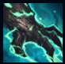
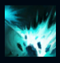
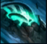
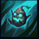
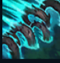

Maokai
| Maokai The Twisted Treant | |
|---|---|
| Release date | 16.02.2011 |
| Class | Vanguard |
| Positions | Top, Support |
| Resource | Mana |
| Range type | Melee |
| Adaptive type | Magic |
| Base statistics | |||
| Health | 565 – 2180 | Mana | 375 – 1106 |
| Health regen. | 5 – 17.75 |
Mana regen. | 7.2 – 17.4 |
| Armor | 39 – 107 | Attack damage | 64 – 120.1 |
| Magic resist. | 32 – 53.25 | Crit. damage | 175% |
| Move. speed | 335 | Attack range | 125 |
Maokai este un arbore falnic și mânios, care luptă împotriva ororilor supranaturale din Insulele Umbrelor. După ce un cataclism magic i-a distrus tărâmul natal, s-a transformat într-o ființă al cărei singur scop este răzbunarea. Numai apa vieții pe care o purta în lemnul inimii sale l-a apărat de moartea vie care i-a cuprins pe cei din jur. Deși era cândva un spirit pașnic al naturii, Maokai luptă acum cu furie împotriva morții vii din Insulele Umbrelor, sperând să-și readucă lumea la frumusețea de odinioară. |  |
SEVĂ MAGICĂ Atacurile de bază ale lui Maokai îl și vindecă după un timp de reactivare moderat, care este redus de fiecare dată când folosește o vrajă sau este lovit de o vrajă inamică. |
||
|---|---|---|---|---|
 |
LOVITURA MĂRĂCINELUI Maokai aruncă în spate inamicii din apropiere cu ajutorul unei unde de șoc, provocându-le daune magice și încetinindu-i. |
|||
 |
TORNADA DE RAMURI Maokai se transformă într-un vârtej de rădăcini mișcătoare, devenind imposibil de țintit și năpustindu-se către țintă. Când ajunge la destinație, țintuiește ținta. |
|||
|  |
ARUNCAREA VLĂSTARULUI
Maokai aruncă un vlăstar, care va apăra zona-țintă. Acesta e mai eficient în tufișuri. |
|||
 |
ÎNLĂNȚUIREA NATURII Maokai invocă un zid colosal de mărăcini și spini care avansează lent, țintuind inamicii din calea sa și provocându-le daune. |